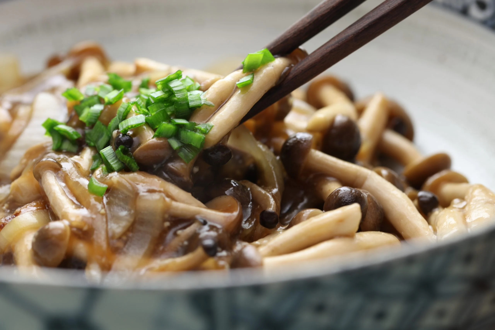
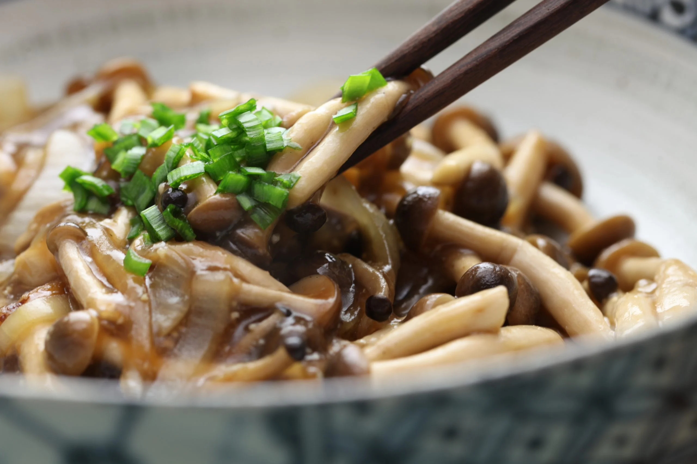

Cardápio Plantô
Pratos Principais
ACOMPANHA: gohan, pastel de angú recheado com KARÊ, tempurá de legumes, berinjela no missô, salada Plantô, inhame caramelizado e kabocha assada.
- Tofu Katsu - R$38,00
- "Chiken" Katsu - R$38,00
- Shimeji Abura Gomá - R$38,00
- Korokke BR - R$38,00
Tiras de Tofu marinadas em blend PLANTÔ, empanadas e fritas em farinha crocante (Panko), finalizada com molho tarê, rabanete em conserva de geleia de pimenta e cebolinha.
Frango de soja temperado, empanado e frito em farinha crocante (Panko), regado com molho tarê.
Shimeji salteados à perfeição em óleo de gergilim e caldo de cogumelos, finalizados com cebolinha
Bolinhos de carne de soja com blend secreto de temperos, empanados e fritos em farinha crocante (Panko). Cremoso por dentro e crocante por fora, finalizado com maionese Kewpie (caseira e vegana), molho tarê e cebolinha.
 

Karê
- Karê Rice - R$30,00
- Karê Katsu - R$34,00
- Karê Shimeji - R$34,00
Tradicional karê japonês, com batatas, cebola e cenoura, temperado com blend de curry da casa. Acompanha gohan.
Tradicional karê japonês, com batatas, cebola e cenoura, temperado com blend de curry da casa. Acompanha gohan e frango de soja temperado, empanado e frito em farinha crocante (Panko), regado com molho tarê.
Tradicional karê japonês, com batatas, cebola e cenoura, temperado com blend de curry da casa. Acompanha gohan e shimeji salteados à perfeição em óleo de gergilim e caldo de cogumelos, finalizados com cebolinha.

Entradas e Porções
- Missoshiru - R$12,00
- Korokke BR - R$22,00
- Pastel de Angú R$22,00
- Tempurá de Legumes - R$22,00
- Salada Plantô - R$12,00
- Sunomono - R$8,00
- Conserva de Rabanete - R$8,00
- Kimchi - R$10,00
Sopa de soja com caldo de legumes e variações em seu preparo. Consulte a opção do dia.
Bolinhos de carne de soja com blend secreto de temperos, empanados e fritos em farinha crocante (Panko). Cremoso por dentro e crocante por fora, finalizado com maionese Kewpie (caseira e vegana), molho tarê e cebolinha. (6 unidades)
Pastéis feitos com massa de milho e recheados com legumes ao molho tarê. (6 unidades)
Legumes finamente fatiados, envoltos em massa fina e frito em óleo quente. Leves e crocantes.
Salada de repolho, alface, sunomono e tomate temperada com molho da casa.
Pepinos em conserva em molho agridoce e gergilim.
Delicadas fatias de rabanete marinados em um mix fresco e suave.
conserva de acelga apimentada e regada com gergilim.